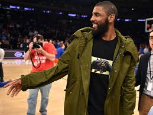
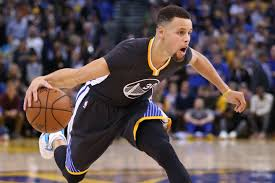
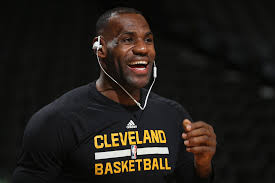
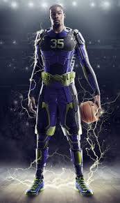
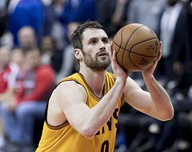
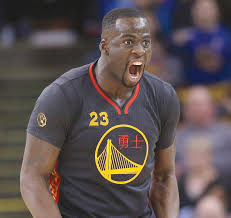
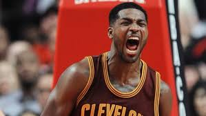
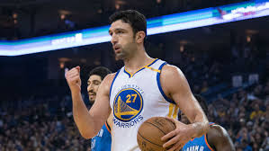

CAVALIERS |
WARRIORS |
|||
|---|---|---|---|---|
| point guard | shooting guard | small forward | power forward | center |
| kyrie irving Kyrie Andrew Irving born March 23, 1992 is an American professional basketball player for the Cleveland Cavaliers of the National Basketball Association (NBA). Irving was born in Melbourne, Victoria, Australia, but grew up in West Orange, New Jersey. Irving has achieved a number of accolades, including the 2011–12 NBA Rookie of the Year, 2014 NBA All-Star Game MVP, and an NBA championship in 2016.[1] He has also played for the United States national team, with whom he has won gold at the 2014 FIBA Basketball World Cup and the 2016 Summer Olympics.  |
stephen curry Wardell Stephen Curry II (born March 14, 1988) is an American professional basketball player for the Golden State Warriors of the National Basketball Association (NBA). Many players and analysts have called him the greatest shooter in NBA history.[1] In 2014–15, Curry won the NBA Most Valuable Player Award and led the Warriors to their first championship since 1975. The following season, he became the first player in NBA history to be elected MVP by a unanimous vote and to lead the league in scoring while shooting above 50–40–90. That same year, the Warriors broke the record for the most wins in an NBA season. Curry helped the Warriors return to the NBA Finals for a third straight year in 2017, winning his second NBA Championship.Curry is the son of former NBA player Dell Curry and older brother of current NBA player Seth Curry.  |
|||
| J.R. smith Earl Joseph "J. R." Smith III[1] (born September 9, 1985) is an American professional basketball player for the Cleveland Cavaliers of the National Basketball Association (NBA). Smith was recruited by the University of North Carolina but opted to enter the 2004 NBA draft. Over his NBA career, Smith has also played for the New Orleans Hornets, Denver Nuggets and New York Knicks. Smith also played overseas for the Zhejiang Golden Bulls of the Chinese Basketball Association due to the 2011 NBA lockout. Smith won an NBA championship with the Cavaliers in 2016. 
|
klay thompson Klay Alexander Thompson (born February 8, 1990)[1] is an American professional basketball player for the Golden State Warriors of the National Basketball Association (NBA). The son of former NBA player Mychal Thompson, he played college basketball for three seasons at Washington State University, where he was a two-time first-team all-conference selection in the Pac-10. Thompson was selected in the first round of the 2011 NBA draft by Golden State with the 11th overall pick. In 2014, he and teammate Stephen Curry set a then NBA record with 484 combined three-pointers in a season,[2] as the pair were given the nickname the "Splash Brothers".[3][4] Thompson is a three-time NBA All-Star and a two-time All-NBA Third Team honoree. In 2015, he helped lead the Warriors to their first NBA Championship since 1975. 
|
|||
| lebron james LeBron Raymone James ( born December 30, 1984) is an American professional basketball player for the Cleveland Cavaliers of the National Basketball Association (NBA). James has won three NBA championships, four NBA Most Valuable Player Awards, three NBA Finals MVP Awards, two Olympic gold medals, an NBA scoring title, and the NBA Rookie of the Year Award. He has also been selected to 13 NBA All-Star teams, 13 All-NBA teams, and six All-Defensive teams, is the Cavaliers' all-time leading scorer, and is the NBA career playoff scoring leader.  |
kevin durant Kevin Wayne Durant (born September 29, 1988) is an American professional basketball player for the Golden State Warriors of the National Basketball Association (NBA). Durant has won an NBA Most Valuable Player Award, NBA Finals MVP Award, NBA All-Star Game MVP, four NBA scoring titles, the NBA Rookie of the Year Award, and two Olympic gold medals. He has also been selected to seven All-NBA teams and eight All-Star teams. He won his first NBA Championship as a member of the Warriors in the 2016–17 season.  |
|||
| kevin love Kevin Wesley Love (born September 7, 1988) is an American professional basketball player for the Cleveland Cavaliers of the National Basketball Association (NBA). He is a four-time All-Star and won an NBA championship with the Cavaliers in 2016. He was also a member of the gold medal-winning USA men's national team at the 2010 FIBA World Championship and the 2012 Summer Olympics. The son of former NBA player Stan Love, Love was a top ranked prospect out of Lake Oswego High School in Oregon. He played one season of college basketball for the UCLA Bruins and led the team to a Final Four appearance in the 2008 NCAA Tournament. Love was named a consensus First Team All-American and was voted the player of the year in the Pac-12 Conference.  |
draymond green Draymond Jamal Green Sr. (born March 4, 1990) is an American professional basketball player for the Golden State Warriors of the National Basketball Association (NBA). Green, who plays primarily at the power forwardposition, was named to the NBA All-Defensive Team and won his first NBA Championship with the Warriors in 2015. Green was named an NBA All-Star and All-NBA Team member the following two seasons. In 2017, he won his second NBA Championship as a member of the Warriors. Green grew up in Saginaw, Michigan, and played college basketball for Michigan State, where he helped the Spartans earn two Final Four appearances and a Big Ten Tournament championship in 2012. Throughout his four-year college career, Green earned conference and national honors, including Big Ten Conference Sixth Man of the Year as a sophomore, and consensus All-American and NABC National Player of the Year honors as a senior.  |
|||
| tristan thompson Tristan Trevor James Thompson (born March 13, 1991) is a Canadian professional basketball player for the Cleveland Cavaliers of the National Basketball Association (NBA). He played one season of college basketball for Texas before being drafted fourth overall by the Cavaliers in the 2011 NBA draft.[1] He also represents Canada in international competition. Thompson won an NBA championship with the Cavaliers in 2016.  |
zaza pachulia Zaza Pachulia[1] (February 10, 1984) is a Georgian professional basketball player for the Golden State Warriors of the National Basketball Association (NBA). He was born as Zaur Pachulia, but his first name was legally changed to Zaza.[2] In 2017, Pachulia won his first NBA Championship as a member of the Warriors. While he holds Turkish citizenship, Pachulia plays internationally for Georgia, captaining his national team in multiple tournaments.[3]  |
|||